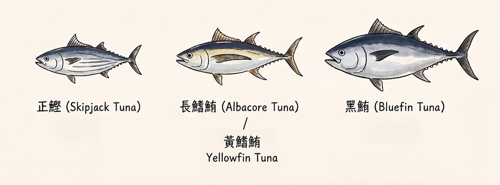

會想做這件事，是因為我自己家也常吃。鮪魚三明治、鮪魚蛋餅、鮪魚拌飯，開一罐就能解決一餐。但一想到重金屬，每次都有點心虛。
後來才發現，重點根本不是「要不要吃鮪魚」，而是你吃到的是哪一種魚。
先看表：
資料為各品牌公開成分標示，整理於 2026 年 9 月
| 品牌／品項 | 成分寫的魚種 | 產地 | 魚種汞含量參考 |
|---|---|---|---|
| 同榮鮪魚片 | 東方齒鰆 （煙仔虎） |
台灣 | 較低非鮪屬，體型較小 |
| 同榮精選魚特餐 | 鮪鰹魚類 | 越南 | 不明標示籠統 |
| Green&Safe橄欖油漬鮪魚 | 東方齒鰆 | 台灣 | 較低非鮪屬 |
| 紅鷹牌海底雞 | 鮪魚 正鰹 東方齒鰆 |
台灣 宜蘭 |
中低三種混合 |
| 新東陽原味鮪魚片 | 鮪鰹魚類 | 台灣 | 不明標示籠統 |
| 新宜興原味鮪魚片 | 鮪鰹魚類 | 台灣 | 不明標示籠統 |
| 愛之味鮪魚片 | 鮪魚 （沒寫品種） |
泰國 | 中屬鮪屬，品種不明 |
| 遠洋牌鮪魚片 | 鮪魚 （沒寫品種） |
台灣 | 中屬鮪屬，品種不明 |
| Hagoromo 哈格鮪魚 | 黃鰭鮪 | 日本 | 中 |
| 蘇澳區漁會黑鮪魚罐頭 | 黑鮪魚 | 台灣 | 較高 |
我是怎麼判斷的
先講清楚，我沒有送驗任何一罐，我只是一個會看背面的家庭主婦。
我做的是兩件事：把每個品牌公開的成分標示找出來，再去對照美國 FDA 公布的各魚種汞含量平均值。
FDA 的數字大概是這樣：
0.126正鰹・最低
0.354黃鰭鮪
0.350長鰭鮪
最高大目鮪
FDA 實測平均值，單位 ppm
同樣叫鮪魚，差了快 3 倍。
所以表格裡那一欄，講的是魚種的差異，不是說哪個品牌比較好或比較差。
在美國買罐頭其實簡單很多，因為正面就直接印魚種——Skipjack、Yellowfin、Albacore，看一眼就知道，想避開哪種放回架上就好。
台灣不是這樣。2017 年起食藥署開放正鰹可以直接標示成「鮪魚罐頭」，只要在成分裡註明就好，所以正面幾乎一律只寫「鮪魚」。你只能翻到背面自己看。

翻到背面之後這樣看：
汞含量最低
寫正鰹、東方齒鰆、煙仔虎、鰹魚 → FDA 資料中汞含量最低的一群
汞含量中等
只寫鮪魚，或寫黃鰭鮪 → 汞含量中等
汞含量偏高
寫黑鮪魚、大目鮪 → 汞含量偏高
看不出來
寫鮪鰹魚類 → 這個真的看不出來，可能是鮪也可能是鰹，想確定只能打客服
那到底可以吃多少？
根據衛福部 2017 年訂定的魚類攝取指南：
衛福部 2017 年魚類攝取指南
育齡婦女、孕婦每週吃鮪魚等大型魚不超過 70 公克（2 份）；6 歲以下兒童每月不超過 1 份或避免食用。
消基會也建議不要只吃一種魚。土魠、秋刀魚、鯖魚、鱈魚、鮭魚的 DHA、EPA 其實都比鮪魚高很多。
所以我現在的做法不是不買鮪魚罐頭，是輪著買。
幾句必要的說明
- 表格裡的汞高低是依魚種推估，不是我實際送驗的結果。依據是各品牌公開的成分標示，加上 FDA 的魚種平均值。
- 消基會 2024 年抽驗 30 件市售樣品，重金屬都在法規限量內。法規管的是單罐不能超標，份量建議管的是長期累積，這是兩件事。
- 這不是在評價品牌好壞，也不是健康或醫療建議。
- 成分跟產地都可能改，請以你手上那罐背面的標示為準。
- 孕期、哺乳中、家裡有小小孩或有特殊狀況的，還是問一下醫師或營養師比較安心。
資料來源 消基會 2024 生鮮鮪魚及魚罐頭調查測試｜EPA-FDA Fish Advice｜FDA 各魚種汞含量｜Cool3c 鮪魚罐頭品牌整理｜元氣網：開放正鰹當鮪魚